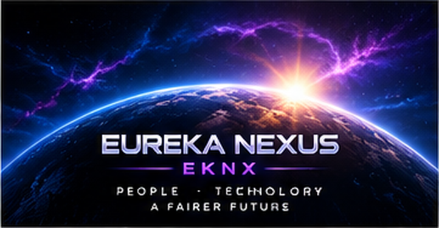

01 · Personal AI
Eureka Agent é a visão de uma IA pessoal evolutiva com memória, continuidade, ferramentas e agentes. Cada utilizador deverá moldar uma Eureka diferente através do seu contexto, objetivos e permissões.
Documento público de visão e arquitetura. Resume o estado atual e a direção planeada; não substitui documentação técnica do código nem constitui promessa de preço ou retorno.
Eureka Agent é a visão de uma IA pessoal evolutiva com memória, continuidade, ferramentas e agentes. Cada utilizador deverá moldar uma Eureka diferente através do seu contexto, objetivos e permissões.
Eureka Miner e Mining Server ligam CPU/GPU ao ecossistema através de trabalho verificável, accounting e recompensas EKNX.
EKNX foi criado para conectar mineração, mercado e futuros serviços do ecossistema, incluindo pagamentos e mensalidades elegíveis quando esses produtos forem ativados.
O desenho do projeto mantém cliente, servidor, verificação PoW e settlement como componentes distintos.
Valores do deployment atual usado no projeto.

Clear status labels matter: deployed, in development and planned are not the same thing.
Mining, AI and blockchain software may contain bugs. Production releases require testing, versioning, rollback and security review.
EKNX can gain or lose market value. No price or return is guaranteed.
Private keys, seed phrases and operator signer secrets must never be published in the website or public GitHub repository.